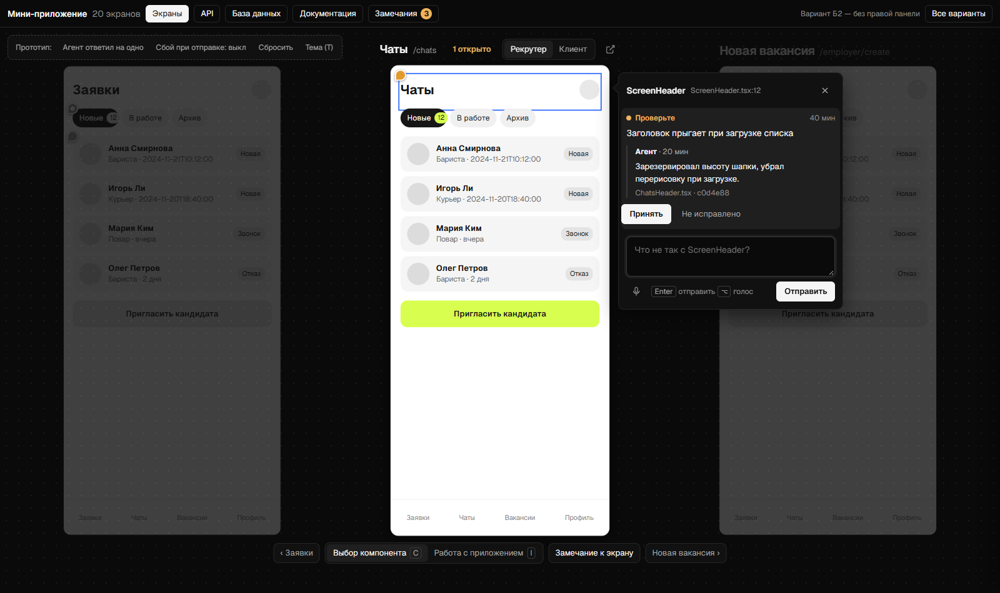
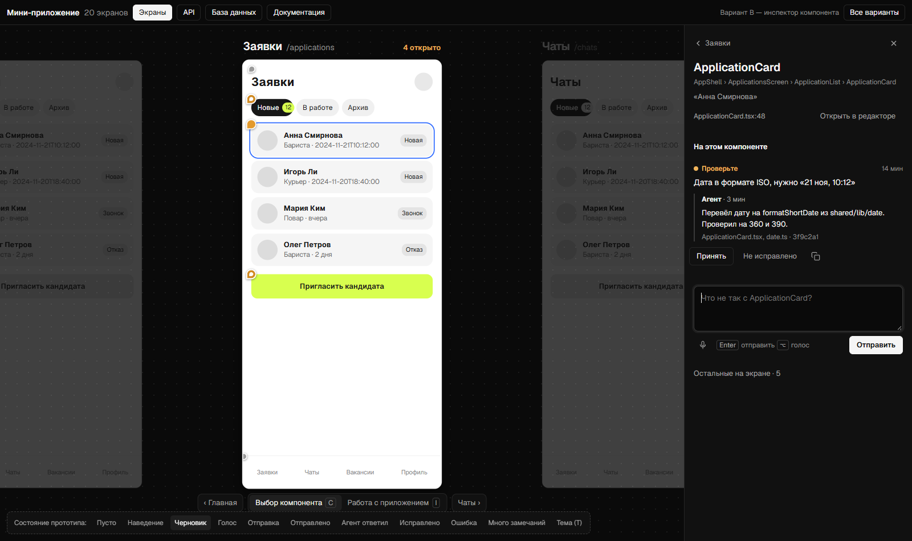
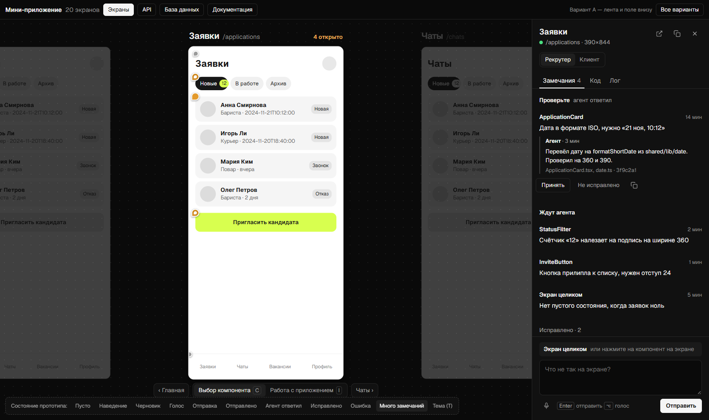
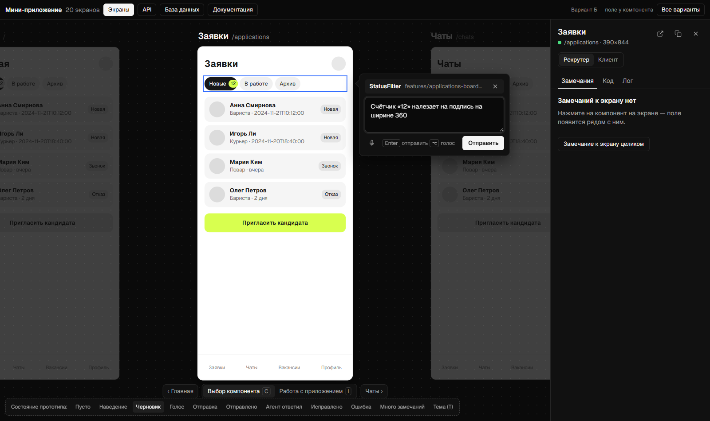
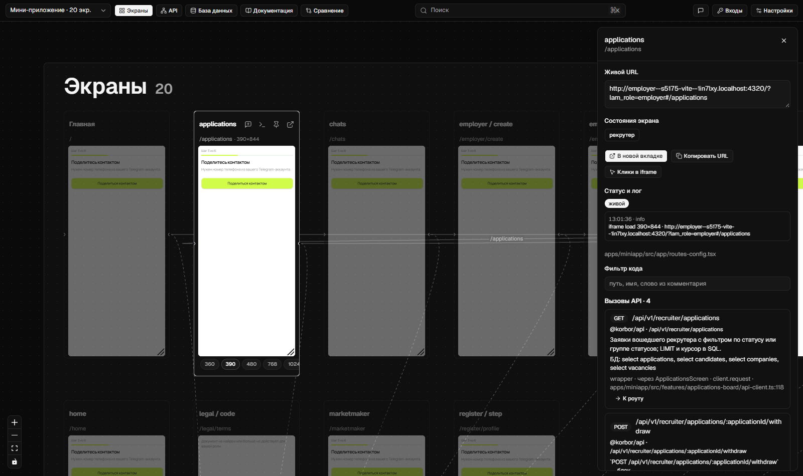
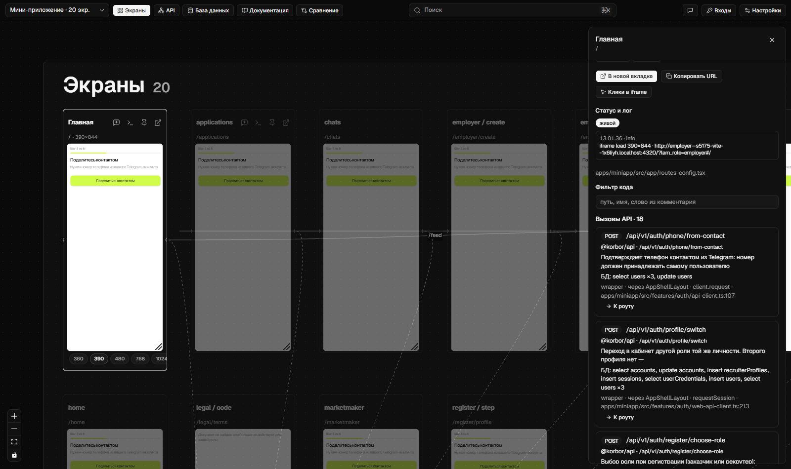

Фокус экрана и замечания агенту
Нажатие на экран ставит его в центр холста, остальные гаснут, справа — панель замечаний. Компонент выбирается сразу, без отдельной кнопки: наведите и нажмите. Ниже три варианта панели. В каждом прототипе внизу слева есть переключатель состояний: пусто, черновик, голос, отправка, ответ агента, исправлено, ошибка.
Клавиши в прототипах: C — выбор компонента, I — работа с приложением, [ и ] — соседний экран, Enter — отправить, удерживать ⌥ в поле — голос, Esc — снять выбор, потом выйти из фокуса, T — тема.
Черновики — метками на экране и группой в листе «Все замечания». Лист открывается кнопкой «Замечания» или ⇧C и закрывается Esc, крестиком или выбором замечания.
Окно у компонента показывает прошлые замечания к нему (больше двух — свёрнуто одной строкой), едет вместе с холстом и не заходит на выбранный экран. Компонент ушёл из кадра — окно закрывается, черновик остаётся в панели и меткой на экране. Вид «Все замечания» — кнопка «Замечания» в шапке или ⇧C. Можно проверять подряд: J и K переходят к следующему, A — «Принять», N — «Не исправлено».

Б2 — без правой панели
Холст во всю ширину. Над экраном — название, «N открыто», роль, открыть во вкладке; под экраном — соседи, режим и «Замечание к экрану». «Все замечания» — выезжающий лист, после выбора закрывается и ставит экран в фокус.
В прототипе можно двигать холст колесом или перетаскиванием, с Ctrl колесо меняет масштаб. Внизу слева: «Агент ответил на одно», «Сбой при отправке», «Сбросить».


Нажали на компонент — в панели его имя, цепочка компонентов, файл со строкой и уже оставленные к нему замечания, поле ввода тут же. Так меньше дублей («я уже писал про эту карточку»), а замечание с первого взгляда привязано к коду, как его читает агент. Из варианта А стоит взять поле, прижатое к низу панели на уровне экрана.

В — инспектор компонента
У панели два уровня: экран (замечания сгруппированы по компонентам, сводка «проверить / ждут / исправлено») и компонент (карточка, его замечания, поле).
- Плюсы
- Видна история компонента до того, как пишешь. Файл и цепочка на виду: понятно, что получит агент. Группы по компонентам читаются быстрее ленты, когда замечаний больше пяти.
- Минусы
- Два уровня — лишний переход «назад» к экрану. Замечание к экрану целиком прячется за кнопкой. Сложнее сделать.

А — лента и поле внизу
Один уровень: сверху вниз «проверьте» → «ждут агента» → свёрнутое «исправлено», поле прижато к низу панели, как в чате.
- Плюсы
- Проще всех: одна лента, поле всегда на месте, писать можно сразу после нажатия на экран. Ближе всего к нынешнему коду.
- Минусы
- Старые замечания к выбранному компоненту не видны рядом с полем. На длинной ленте глаз ходит между экраном и низом панели.

Б — поле у компонента
Поле всплывает справа от экрана напротив выбранного компонента, как комментарии в Figma. Панель — только список и сведения об экране.
- Плюсы
- Взгляд не уходит с экрана. Связь «компонент — текст» видна стрелкой.
- Минусы
- Поле перекрывает соседний экран и уезжает при перемещении холста. Ввод и история в двух местах — то, что плохо сейчас. Так устроено сегодня, и путь от этого не короче.
Как сейчас
Панель справа начинается с адреса в три строки и белой кнопки «В новой вкладке», дальше лог и 18 карточек API. Замечаний в ней нет: они в отдельной левой панели, которая появляется только после первого замечания.


Разбор, сценарий, состояния и вопросы — в 02-design.md рядом с папкой прототипов.